从登录开始，快速完成一次客户跟进
这份手册介绍 CRM 有哪些板块、每个板块能做什么，以及销售最常用的操作路径。按左侧顺序阅读即可。
一、登录 CRM
CRM 账号由管理员邀请。管理员先向你的企业邮箱发送邀请邮件，你点击邮件中的邀请链接，按页面提示设置登录密码并完成账号激活，之后使用受邀邮箱和新密码登录 https://crm.chinanhd.com。
- 打开管理员发送的邀请邮件。
- 点击邀请链接，进入账号激活页面。
- 设置登录密码并完成激活。
- 返回 CRM，使用受邀邮箱和新密码登录。
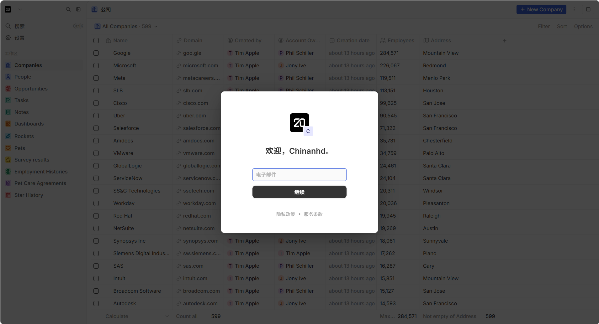
二、认识 CRM
CRM 用来集中管理客户资料、线索、项目和沟通记录。日常工作主要围绕接收消息、整理线索、维护客户和追踪项目展开。
四、对话工作台
对话工作台由左侧会话清单、中间消息区和右侧客户资料组成。顶部可以按渠道和会话状态筛选。
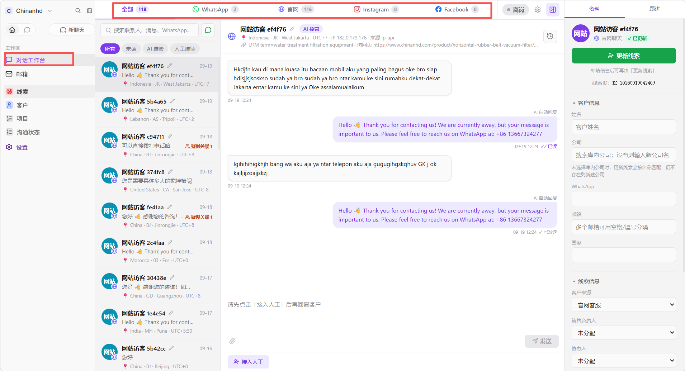
可以做什么
- 查看官网访客和 WhatsApp 消息、时间、附件和访客来源；
- 发送文字、图片或文件；
- 在 AI 接管和人工接待之间切换；
- 填写客户资料并转为线索；
- 查看疑似关联访客，判断是否存在重复访问。
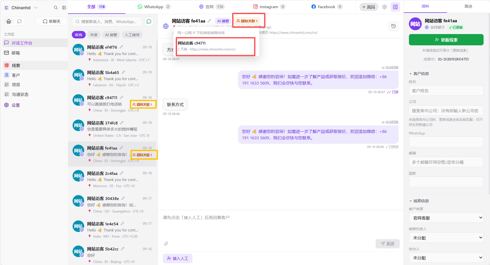
五、常用操作方法
绑定 WhatsApp
- 打开 设置 → 个人资料 → 渠道。
- 在 WhatsApp 区域生成或刷新二维码。
- 在手机 WhatsApp 的“已关联的设备”中扫码。
- 回到 CRM 刷新状态，确认显示已连接或工作中。
- 在对话工作台发送一条短文本测试。
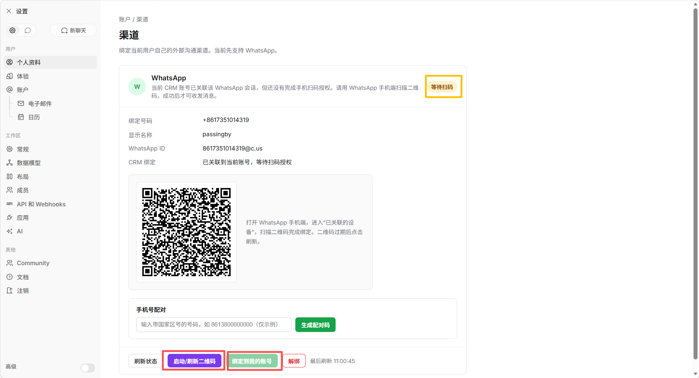
配置 AI 自动回复时间
- 打开对话工作台，点击顶部 AI 配置按钮。
- 找到需要配置的渠道，例如官网。
- 打开或关闭 AI，选择“全天”或“按时段”。
- 按时段模式下填写开始和结束时间。
- 在“人工接待未回复时长”中填写 1–120 分钟。
- 点击保存，确认页面显示“配置已保存”。
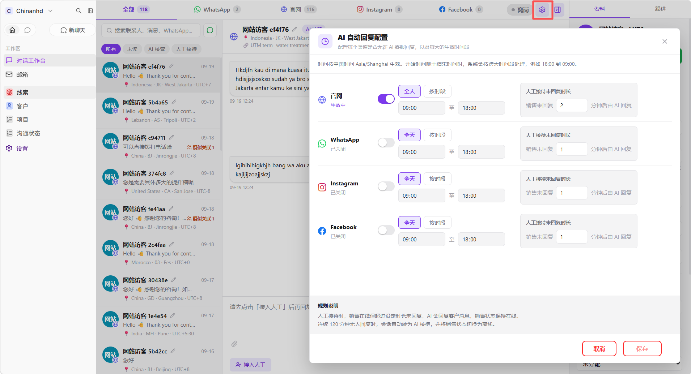
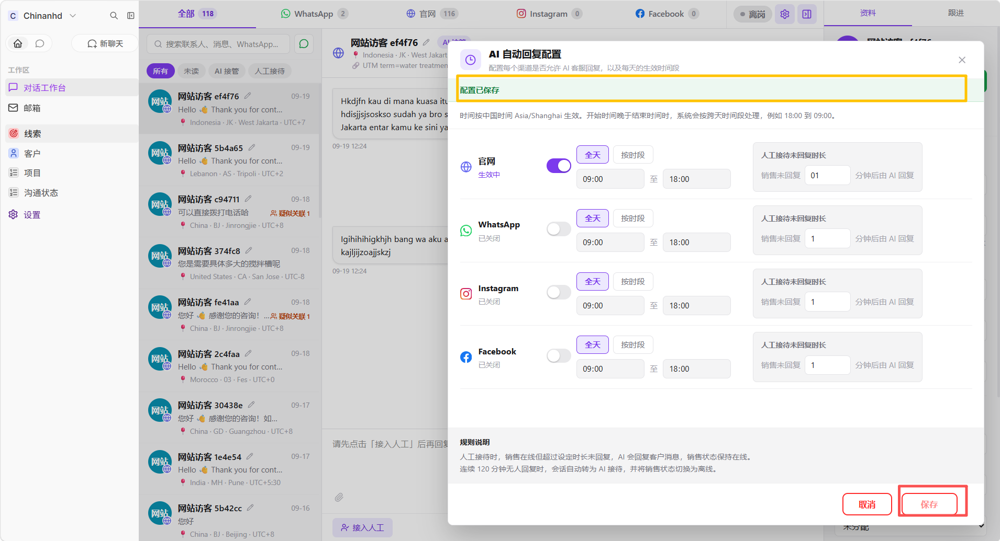
人工接管官网会话
- 选择官网会话并阅读最近消息。
- 点击人工接待或接管会话。
- 确认状态变为人工接待后，再发送消息。
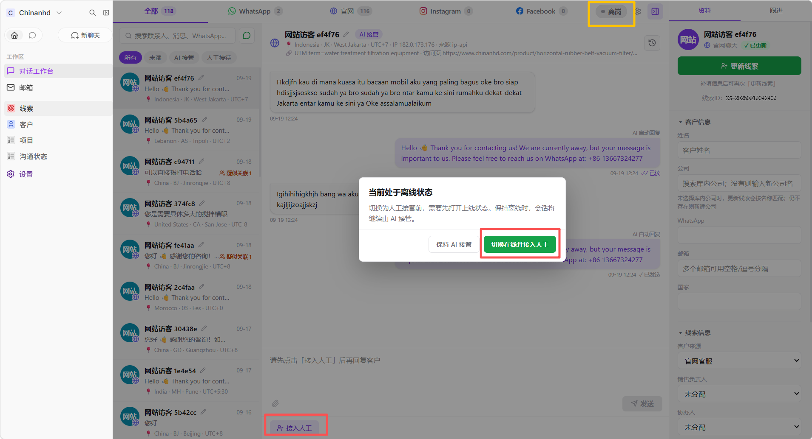
转为线索
- 在右侧填写客户姓名、公司、邮箱、WhatsApp、国家和需求。
- 检查重复提示。
- 点击转为线索或更新线索，选择负责人和协办人。
- 到线索板块确认记录已经建立。
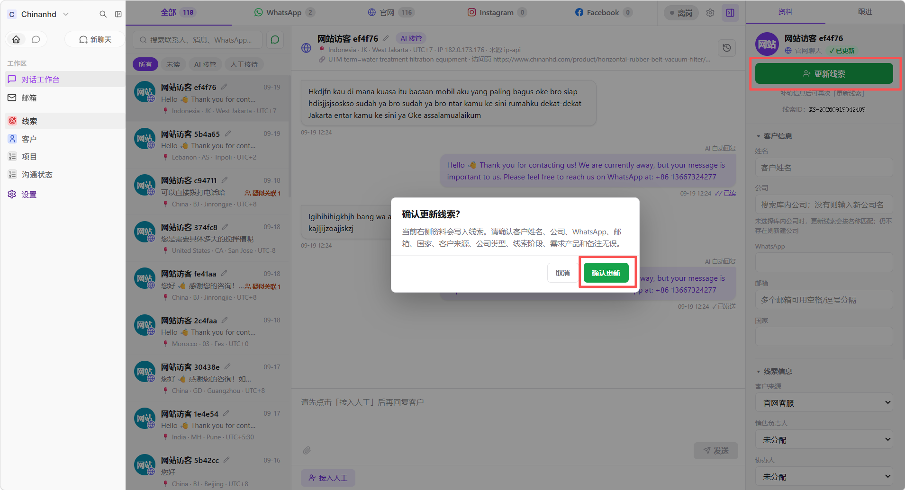
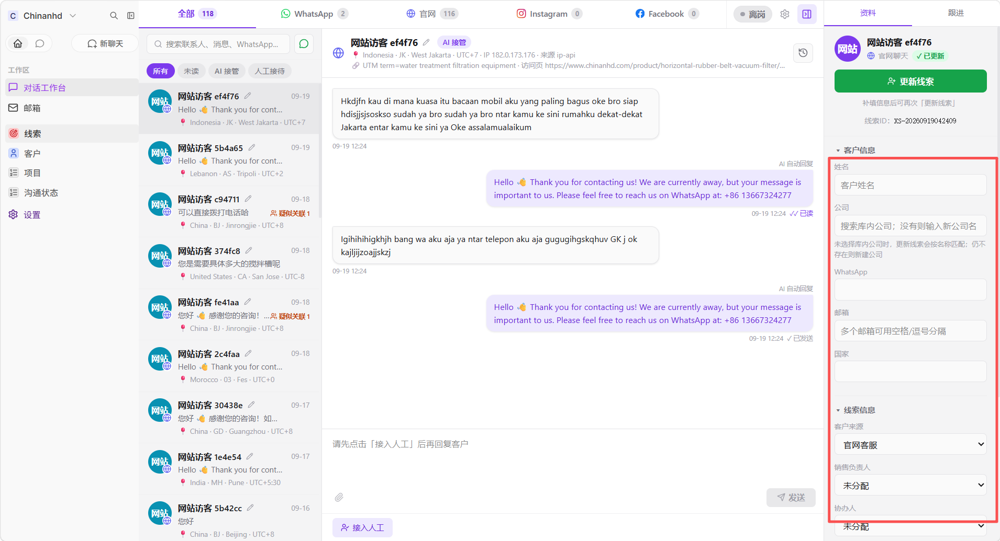
六、功能介绍：邮箱
邮箱用于查看已同步到 CRM 的企业邮箱记录。分类包括收件箱、发件箱、重点邮件、客户邮件、垃圾邮件和全部。
区分收信和发信
先用收件箱或发件箱分类，再打开详情确认发件人、收件人、抄送人和时间。引用历史会与本次内容分开显示。
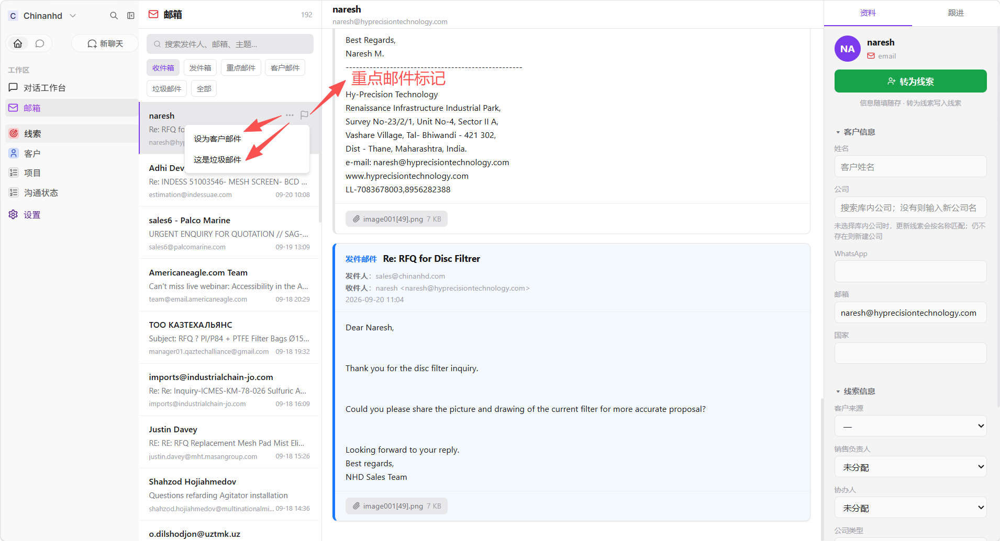
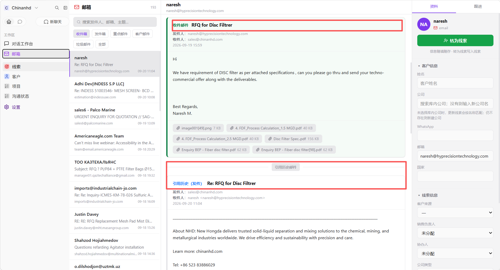
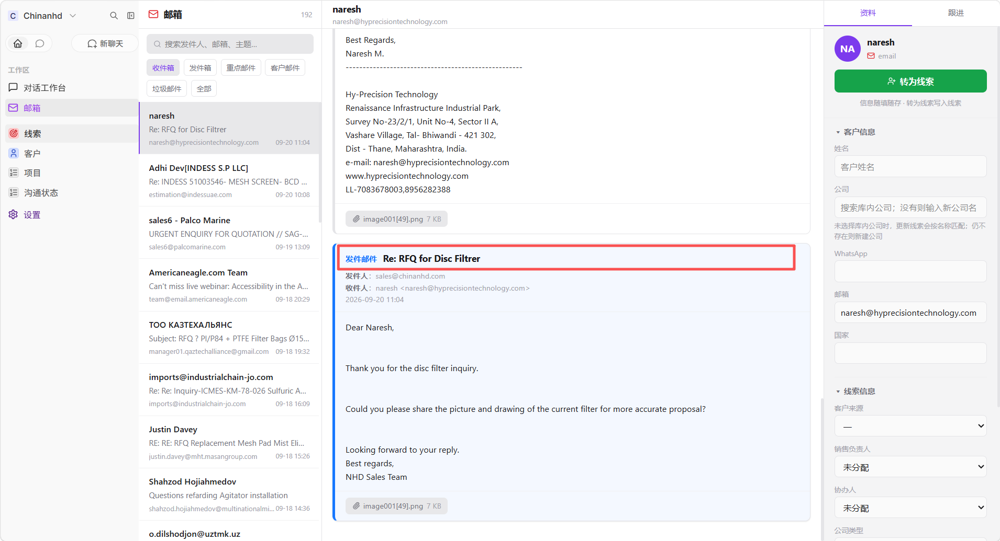
从邮件创建线索
打开邮件后，在右侧填写客户姓名、公司和联系方式，再转为线索。抄送人可以作为客户姓名候选，候选列表只显示姓名。
七、功能介绍：线索
线索是仍需要确认、跟进或转化的潜在客户记录，处于业务漏斗前段。重点是收集身份、需求和来源，判断是否值得继续跟进。
可以填写联系方式、来源、需求、负责人和协办人。保存或转化时，系统会检查 WhatsApp、手机号、邮箱和官网链接，发现相同标识会提示疑似重复，不会自动合并或删除。
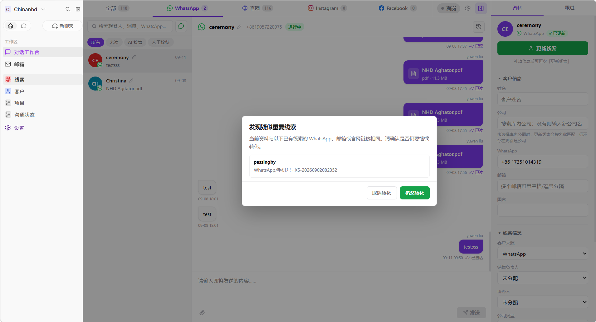
八、功能介绍：客户
客户板块保存已经确认、需要长期维护的公司和联系人主数据，重点是稳定资料和去重。一个客户可以关联多个线索和项目；线索转为客户或关联已有客户，需要用户确认。
九、功能介绍：项目
项目用于跟踪具体客户需求、订单或业务机会，是漏斗中进入实际业务推进后的管理维度。常见路径是：确认需求 → 建立项目 → 更新阶段 → 记录跟进。一个客户可以对应多个项目。
十、功能介绍：沟通状态
沟通状态是沟通历史记录板块，不是即时聊天发送窗口，也不是新增数据的表单。新消息和新会话应在对话工作台中产生；这里用于按记录查看和复核已经发生的沟通。
十一、功能介绍：设置
设置用于维护个人资料、个人渠道和界面偏好。绑定 WhatsApp 的具体步骤见上面的“对话工作台操作”。
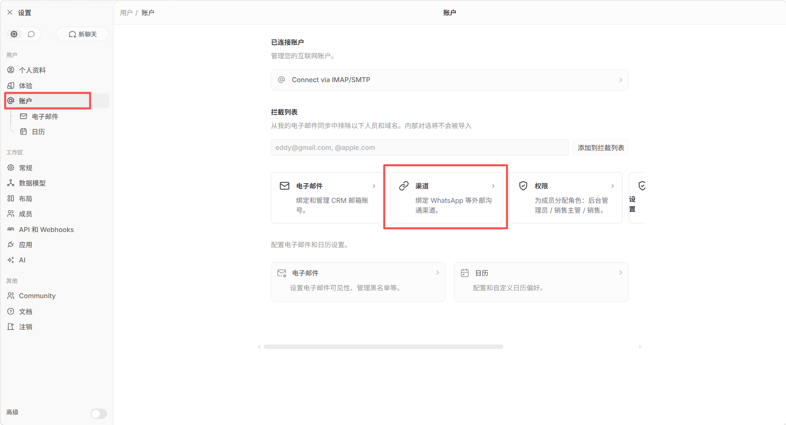
十二、常见问题
为什么看不到某条会话或线索？
先确认登录账号、角色、负责人和协办人。个人 WhatsApp 只属于绑定该账号的销售；线索和沟通状态还会受负责人、协办人和角色权限影响。
为什么刚收到的消息没有马上出现？
先刷新当前会话，再检查网络和渠道在线状态。网络中断、渠道掉线或源端延迟时，消息可能晚于实际到达时间。
为什么附件发送慢或失败？
大文件会受到浏览器、网络、服务器和 WhatsApp 源端处理速度影响。失败时先查看消息状态和错误提示，再重试。
手册维护规则
每次 CRM 功能或界面迭代后，同步检查功能说明、操作步骤、按钮名称、权限规则和相关截图，并更新文档日期。网页端和 Markdown 版保持同一内容。